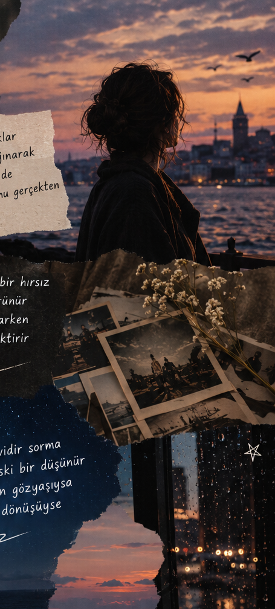

CEMRE FATMA GÜLBEYAZ
Derin düşünen ve hissetmekten korkmayan bir ruh
Şiirlerim
Bir Sayfa Dolusu Ben
Bir sayfa açtım kendime, Biraz hayal biraz neşe. Kimsenin bilmediği düşlerimi, Sakladım bu beyaz deftere. Bazen güneş,bazen yağmur, İçimde binbir ayrı duygu Bir yanım çocuk,bir yanım düş, Kalbimde kocaman bir bulut. Yıldızlara soracağım bir gün, nereye gider bütün hayallerim? Belki uzak,belki çok yakın, Belki de kendimdir aradığım. Yıllar sonra açarsam bu sayfayı, Hatırlar mıyım bugünkü halimi? Tek dileğim,ne olursa olsun, Kaybetmem içimdeki rengimi
İçimdeki sessiz Dünya
Herkes bir yüzümü tanır kimse içimdeki yolu bilmez Gülüşüm herkese ulaşır Ama her düşüncen dile gelmez Bazen susmak anlatmaktır Biraz kendinden uzaklaşmaktır İnsan kalabalıklar içinde bile Kendi dünyasında yalnız kalmaktır Gece olur düşünceler uyanır Sessizliğe Bin soru karışır Bir Yıldız Kayar gökyüzünden İçimde bir dilek ışıldar Yıllar geçer mevsimler değişir Nice hayal uzaklara erişir Ne olursam olayım tek dileğim İçimdeki beni kaybetmeyeyim
Reşat Nuri GÜNTEKİN
İnsan en çok neyi saklar
İnsan en çok kendini saklar Bir çift gözün ardına sığınarak Herkes yüzünü ezberler de Kim bilir kaç kişi tanır onu gerçekten Zaman kimsenin görmediği bir hırsız Dünden yarına sessizce görünür Biz ömrü yaşadığımızı sanarken Ömür bizden hatıralar biriktirir Gökyüzü neden mavidir sorma Belki de Deniz'in eski bir düşünür Ya yıldızlar gecenin gözyaşıysa Ya karanlık ışığın dönüşüyse Bir gün bütün sorular susacak Dünya kendi sırrına kapanacak Ve geriye yalnızca şu kalacak Yaşadın mı yoksa yalnızca var mıydın
İletişim
Instagram: @nasvelya
Email: nasvelya@gmail.com